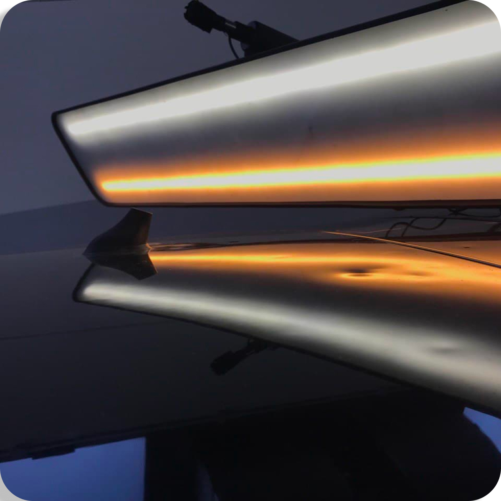
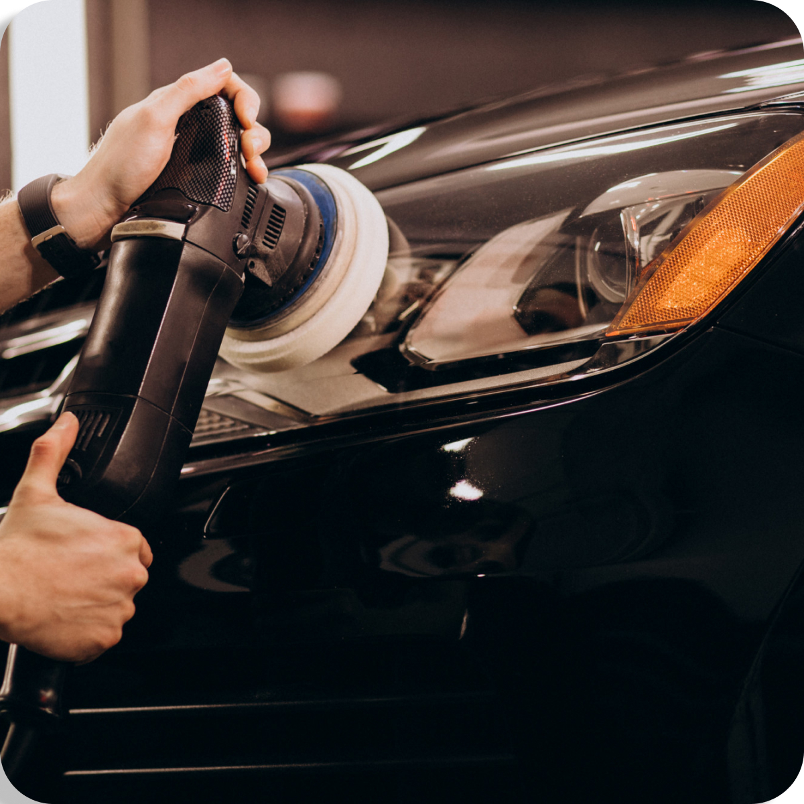
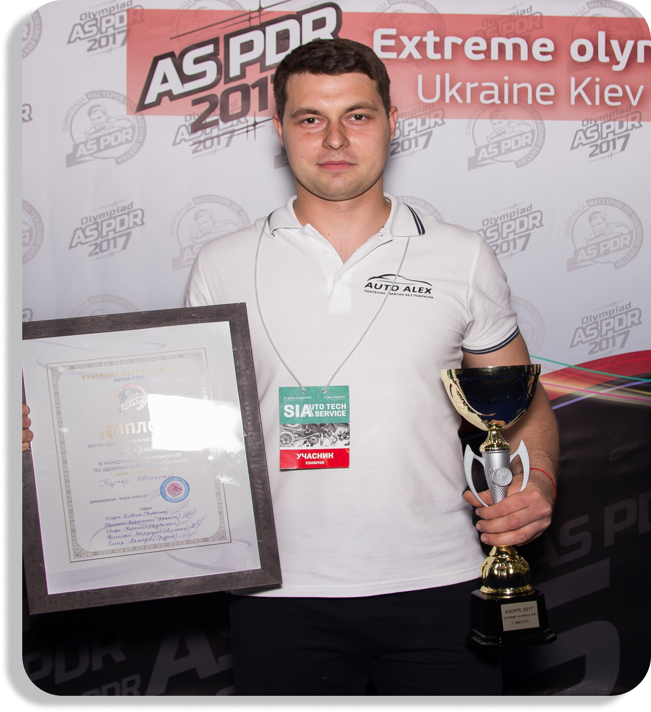
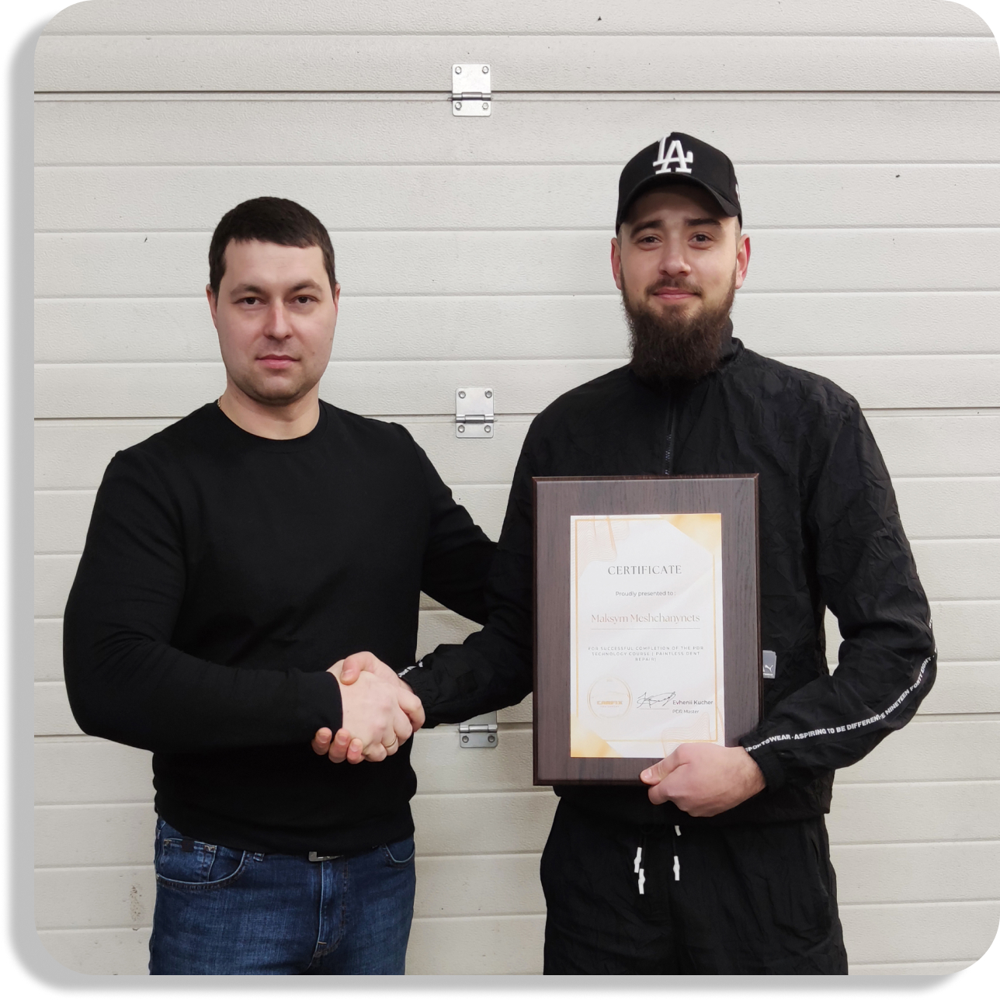

Від 30 хв
Швидка безкоштовна консультація, попередня оцінка пошкоджень по фото та запису на послугу.

Технологія PDR - це сучасний та комплексний підхід до виправлення дефектів кузова, спричиненого різними чинниками.
Завдяки технології PDR та спеціальному інструменту, ми можемо видалити вм'ятини різної складності на кузові автомобіля без фарбування деталей за умови, що на автомобілі не постраждало лако фарбувальне покриття.

Проводиться для захисту лакофарбового покриття авто з метою його додаткового захисту від впливузовнішніх негативних факторів. Застосовуються поліролі, що не містять абразивних матеріалів. Рекомендується виконувати кілька разів на рік.
Виконується для усунення шкоди, завданої лакофарбувальному покриттю. Застосовуються поліролі на абразивній основі. По закінченню відновної обробки виконується захисне полірування.


Авторський курс навчання видаленню вм'ятин “PDR Expert”.
До курсу входить: